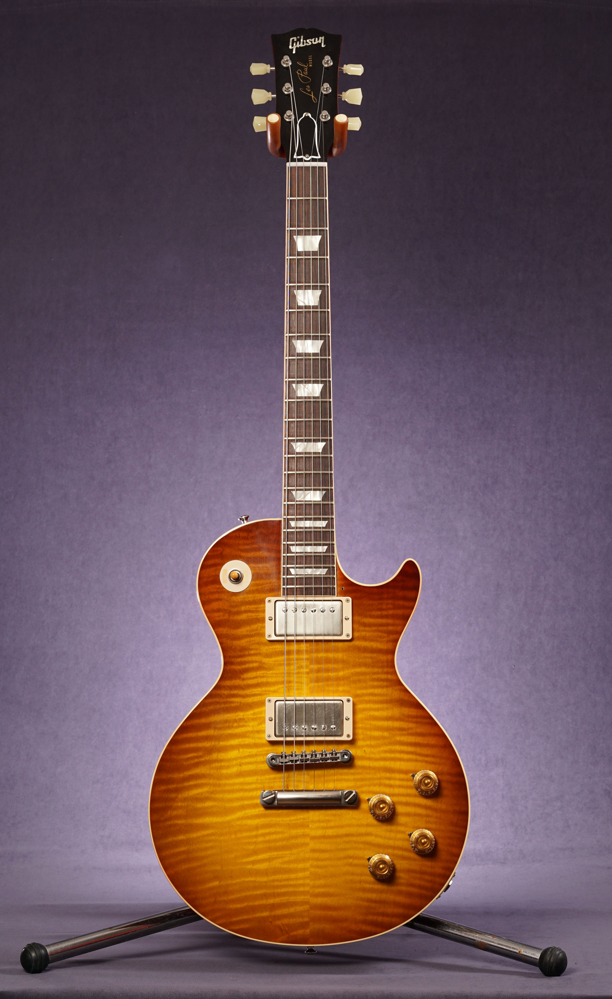

Guitar Center nace de la idea de un apasionado de la música con un objetivo en mente: poner los medios
necesarios para producir
música al alcance de la mano de los músicos. Desde el primer día que escuchamos a nuestros clientes
sobre sus necesidades, sus deseos y sus sueños, y con esa información estuvimos proveyéndonos de
productos que nunca habían llegado a nuestro mercado local.
Los tiempos cambian, y los músicos también, así que constantemente debemos estar allí con los últimos
avances de la tecnología en instrumentos y dispositivos de sonido.Guitar Center quiere darte las
herramientas que necesitas para llevar la música que tienes dentro de tu cabeza a nuestros oídos.
Brindamos excelentes atención para las necesidades de cada músico.
En Guitar Center, contamos con un equipo apasionado de expertos en luthería que ayudan a
diseñar, encontrar y brindar
las mejores guitarras que se acoplen a la forma de ejecutar en cada cliente para así alcanzar el
éxito en su
profesión musical.
Nos especializamos en importación de instrumentos en línea que abarcan desde grandes firmas de
la industria,
hasta productos diseñados por profesionales apasionados por la música.
Nuestro equipo está constantemente actualizado sobre las últimas tendencias y modelos tanto de
guitarras acústicas como guitarras eléctricas. También contamos con herramientas extras para
encontrar
el mejor sonido mediante pedales, amplificadores, púas y líneas de conexión inalámbricas.
La Gibson SG Standard mantiene el aspecto clásico y las características propias de los modelos SG
de finales de los años 60. Mástil con perfil redondeado de caoba, diapasón de Rosewood con
empalme al cuerpo en el traste 19, y cuerpo sólido de caoba, constituyen la columna vertebral
del sonido SG.
$ 1.200.000
Fender Stratocaster "Blackstrat" David Gilmour Signature
Fender 1968-1969. Cuerpo de aliso con acabado en negro pintado sobre el acabado sunburst
original. Mástil Fender de arce de finales de los años 60, con cabezal grande y 21 trastes.
Pastillas Fender de bobina única de finales de los 60.
$ 800.000
Gibson ES-335 Blues Signature "B.B KING"
La Gibson ES-335 cuenta con un cuerpo semihueco con un bloque central de caoba sólida, lo que le
da a la guitarra su característico sustain y resistencia al feedback. La guitarra semihueca
también cuenta con una tapa y fondo de arce, y un mástil de caoba.
$ 872.600

Gibson Les Paul Slash Collection
La Gibson Les Paul es un modelo, tanto de guitarra eléctrica como de bajo, de la marca Gibson
Guitar Corporation. Se produce desde 1952, y es considerada, junto con las Gibson SG.
$ 433.500
Fender Telecaster Squire Deluxe
Barra de armadura estándar con ajuste hexagonal de 3/16 pulgadas. Radio del diapasón de 24,10
centímetros. Longitud de escala de 64,77 centímetros. Unión de cuerpo y mástil con placa de
metal atornillada con 4 pernos, en la parte posterior del cuerpo.
$ 315.000
Gibson Custom Authentic Zakk Wylde
La Gibson Zakk Wylde Signature Les Paul Custom está diseñado a medida por Zakk Wylde,
guitarrista de Ozzy Osbourne y el líder de la Black Lable Society y posiblemente el héroe de
guitarra más influyente de nuestro tiempo. Tiene un diseño particular y llamativo de forma
cicular a la vista de todoss
$ 550.000
Contactanos
Contactanos y te asesoraremos para ayudarte a decidir
cual de nuestros instrumento se adapta mejor a tus necesidades.
Lleva tu música al siguiente nivel.